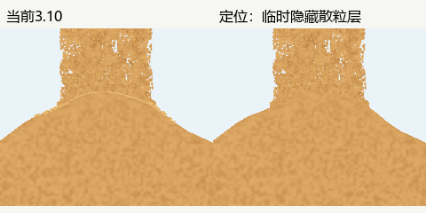

3.10 交接亮弧：重新打开
用户指出沙柱与沙堆交界处有分隔感。先前将当帧堆面细亮边作为P3保留的判断不充分；当前决定改为待修，原有工程和局部接触修复证据保留，不重写原发布记录。

已确认来源：在同一冻结时刻分别关闭沙面亮带、局部接收纹理、接触补粒、撞击闪光，接触亮弧仍在；隐藏飞溅/沿坡散粒绘制后亮弧消失。触坡后散粒继续统一使用sand_light，密集重叠后形成连续描边。3.10持久贴坡让这层更连续，也强化了分隔感。
证据覆盖1秒/0.5秒的1080×1848、5秒/2.5秒的540×924和50秒/25秒的1080×1848实际PC同刻画面。原图摘要与限制。早期短周期诊断未覆盖工具内固定50秒的重置，已排除；短周期正式诊断重跑并断言实际duration和真实接触状态，不将初始空画面计为通过。
修复方向：保留真实触坡粒子与短距离铺开，接触后逐步使用接近沙堆的颗粒色调，并打散连续高亮覆盖；不以删除全部飞溅或再圆滑沙堆掩盖接缝。先做局部着色对照，再复查暂停、1秒快速涨堆、5/50秒近满和余砂。
定位轮仅完成定位及复审登记，当时未修改应用实现，未宣称问题已修复。后续实现与复审另见3.11记录；本页保留原失败证据。当前审核决定 · 3.10原记录。